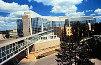

|

COLLEGE OF AGRICULTURE The College of Agriculture launched a revised four year B.S.A. degree program in September, 1995. The new curriculum is designed to provide graduates with a strong understanding of agriculture at the local, national and international levels; a specialized body of knowledge in a major agriculture subject area; business skills; the ability to think in a critical manner and to pursue problem-based learning; and the ability to collect, integrate and communicate information effectively. The entire curriculum is delivered using an integrated systems-based approach to learning. Major issues that agriculture students and practicing Agrologists face include: • Resource use consistent with sustainable food production and environmental safeguarding. • Production, processing and marketing of an ample supply of high-quality food at low cost. • Research, development, and implementation of innovative, efficient and economical production, management and marketing systems. Agriculture is, very much, a science and technology oriented discipline. Aspiring graduates will be well served by pursuing a career in Agriculture. The College is an acknowledged leader in research and teaching. Our graduates do well in the employment market. After first year, students must see a B.S.A. Program Adviser (see last page) to select one of 13 majors. A minor in a second field of specialization is also possible.
PROGRAM FOR AGRICULTURAL CO-OPERATIVE EDUCATION (PACE) B.S.A students can choose to participate in the College's co-operative education program. Co-op education is a dynamic concept of education that allows students the opportunity to alternate between full-time study and paid full-time work while completing the B.S.A. degree. For more information call the PACE office (306) 966-7766. CERTIFICATE IN AGRICULTURE PROGRAM The Certificates in Agriculture program, introduced in 1990, is an off-campus program offered in collaboration with Extension Credit Studies, Extension Division. It makes available a limited number of regular Diploma courses for home study in specific subject areas. At present, Certificate programs are available in Crop Production and Farm Business Management.The Prairie Horticulture Certificate program is the first home study program in horticulture designed specifically for use in the prairie provinces. It is offered co-operatively by a consortium of four Western Canadian educational institutions - Assiniboine Community College (Brandon, Manitoba), Olds College (Olds, Alberta), the University of Manitoba, and the University of Saskatchewan. Each partner in the consortium develops and delivers courses for the program in its areas of expertise. Individuals may apply for admission to the program through the institution of choice (the "home" institution) and, once admitted, may register for any of the courses offered. All courses taken from participating institutions will be treated as if they had been taken at the home institution. Upon successful completion of the program the Prairie Horticulture Certificate will be awarded by the home institution, provided that at least 50% of the program content has been taken through a participating institution. DIPLOMA IN AGRICULTURE PROGRAM The three-year Diploma in Agriculture Program comprises studies in applied agricultural science. It is designed to assist individuals to become better, more knowledgeable farm operators and farm business managers, to increase their opportunities for meaningful off-farm employment, and to improve their abilities for effective community involvement. To accommodate farming operations, each academic year consists of two terms in the period October to March. Following the first term of Year 1, students must select one of three streams, Animal Production Management, Crop Production Management or Multiple Enterprise Management. Employment Opportunities A wide range of challenging and rewarding farm and off-farm jobs are available to Diploma and Certificate in Agriculture graduates. Some of the more common jobs available are for Research Technicians, Soil Conservationists, Credit Advisors, Farm Operators or Managers, Farm Supply Salespersons, Machinery Service Representatives, and Extension Technicians. Web Links
U of S College of Agriculture Website
|